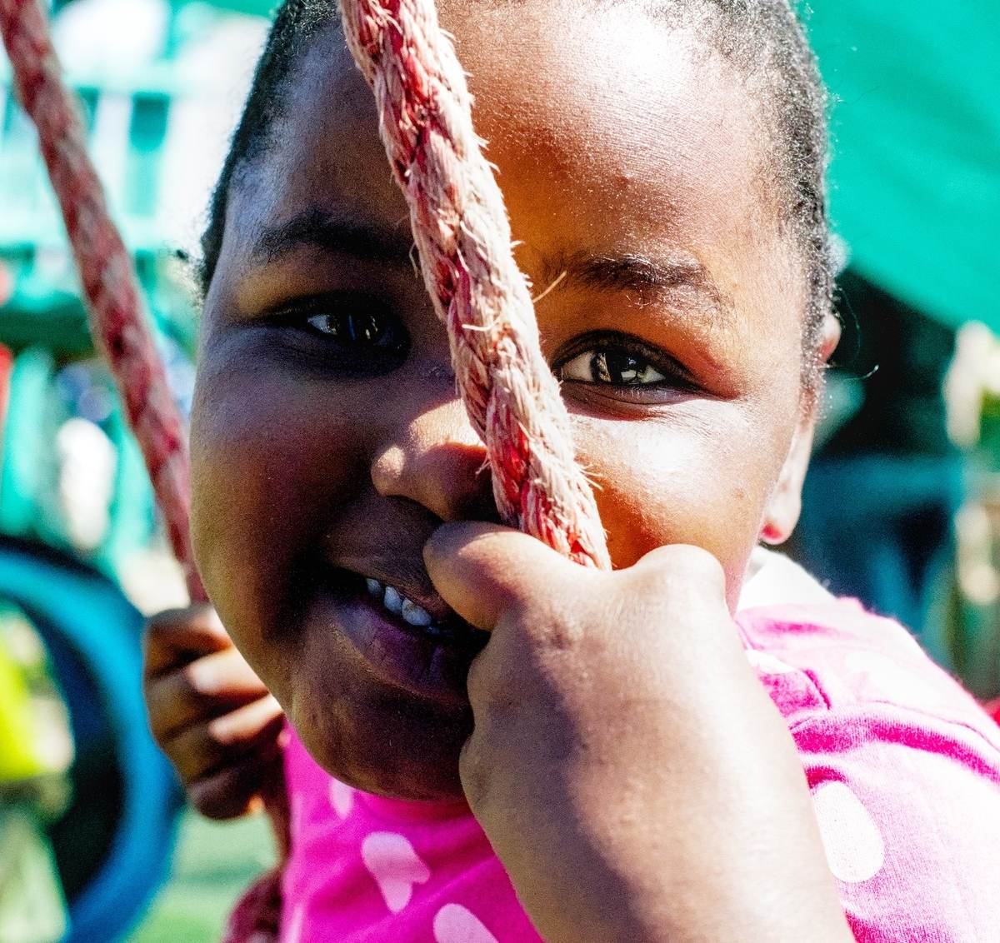
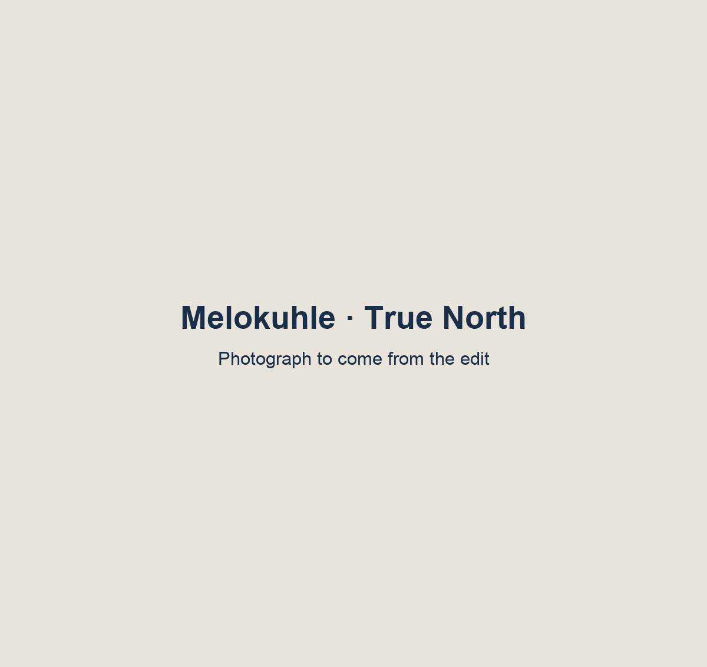
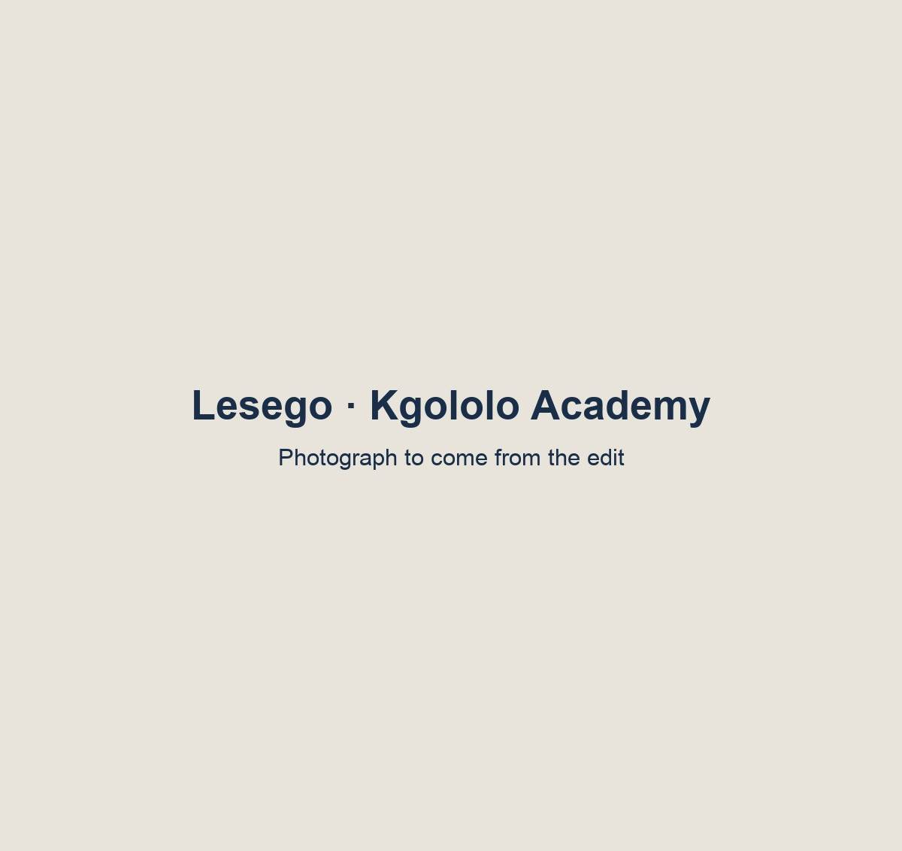

|
*|IF:FNAME|*Dear *|FNAME|*,*|ELSE:|*Dear Even Ground friend,*|END:IF|* In South Africa, about one in three people is a child, and for millions of them, the chance to learn is decided long before they ever sit an exam. President Cyril Ramaphosa acknowledged that focusing on Early Childhood Development (ECD) is 30 years overdue in the country. |
|
Give more children a chance to learn |
| 8 in 10
|
By age ten, eight in ten children can’t read with understanding in any language. |
|
At age four, fewer than half of children in early learning programs are on track to start school ready to learn. For children with no access to preschool at all, it’s fewer than one in five. Those numbers aren’t a verdict on the children. They reflect what was, and wasn’t, around them: a trained teacher, a classroom that makes room for every kind of learner, a school that expects great things. |
Three children. Three schools. |
That’s why this year we’re telling three stories. Each of the three stories is anchored in one real child, told plainly: who they are, what changed for them, and what they’re working toward now. The stories happen to come from three different kinds of programs, early development and inclusion of children with disability (Siyakwazi), support to ECD centers in informal settlements (True North), and innovative schooling (Kgololo Academy). |
|
 |
|
Siyakwazi · Her story: November 9
Isenathi
A child with a disability who has found her place in an inclusive classroom in rural KwaZulu Natal. Siyakwazi Inclusion, rehabilitation therapy, school readiness and early learning for children with disabilities in rural KwaZulu‑Natal. 174 children with disabilities and their families supported in 2025 and 7,000+ home visits through the Inclusion and Early Learning programmes. |
|
 |
|
True North · Her story: November 23
Melokuhle
A first-grader empowered on her way to school by an holistic ECD center in one of Cape Town’s most impoverished neighbourhood. True North Early childhood development teachers and principals’ mentorship and holistic development in Vrygrond, Cape Town. True North strengthens the ECD sector by training, mentoring, and equipping 30 pre-schools and 144 staff who care for more than 1,700 young children each day. |
|
 |
|
Kgololo Academy · Her story: December 7
Lesego
A student in Alexandra, Johannesburg, who plans to become a defense lawyer. Kgololo Academy A low-fee independent primary school giving children in Alexandra, Johannesburg, a world-class education within their own community. 236 students in 2025. 90% of Grade 7 learners awarded fully funded places at leading high schools. |
|
Donate to the Fall Campaign |
[Telling these stories well] |
[Secondary copy, about 100 words, from the team: how Even Ground keeps supporting these organizations through good times and hard ones, and is growing the team and resources that report on their work, so each year donors can see more clearly what their support makes possible.] |
Give more children a chance to learn. |
[Closing copy, about 50 words, from the team. For example, from the Board intro email: we hope you’ll stand with these children and the organizations that serve them, with a gift to this year’s Fall Campaign.] |
|
Donate |
With gratitude,
Justin Ari Martina
Chair, Even Ground Board
P.S. [P.S. placeholder] Isenathi’s story arrives on November 9. Follow all three children at evenground.org/stories/2026. |
|
Even Ground
Even Ground Board members: Annie Mullen, Bharat Ganju, Jason Rostovsky, Rohan Nirody, Andrew Klaber, Rohit Sahni, and Scott Grinsell
Even Ground is a 501(c)(3) nonprofit organization. Your contribution is tax-deductible.
Photography: Franc Moult [confirm]
*|LIST:ADDRESS|*
Update preferences | Unsubscribe
|